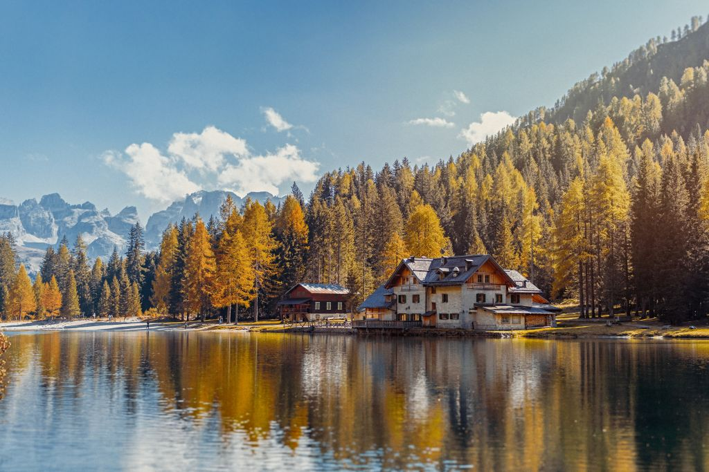
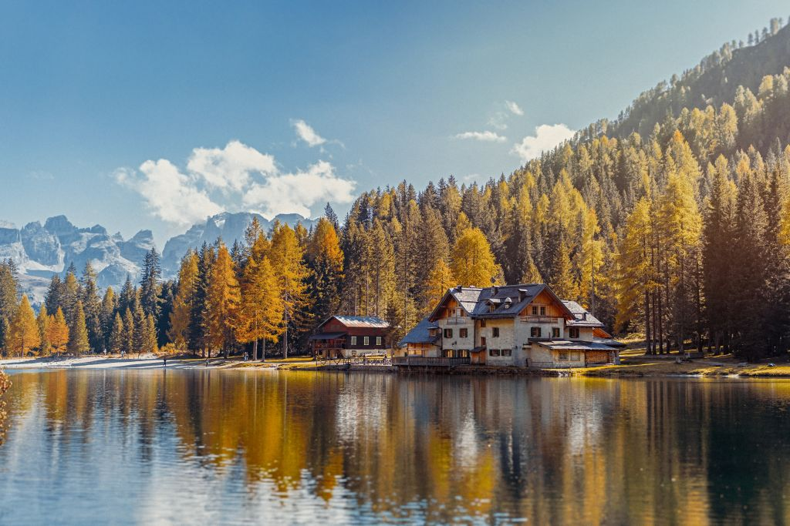

About Us
Leigh McAdam is a Calgary-based writer, photographer and social media enthusiast with over 48,000 followers. Her blog: HikeBikeTravel is frequently cited as one of the top travel and outdoor adventure blogs in Canada, and consistently receives over 135,000 monthly page views. She shares her enthusiasm for the outdoors as a brand ambassador for Sporting Life, and has worked on campaigns for Travel Alberta, Expedia and Flight Hub. Leigh is the author of Discover Canada: 100 Inspiring Outdoor Adventures. Currently, she is co-authoring: 125 Nature Hot Spots in Alberta (spring 2018). A true adventurer, Leigh will try anything once, except perhaps bungee jumping.


 
